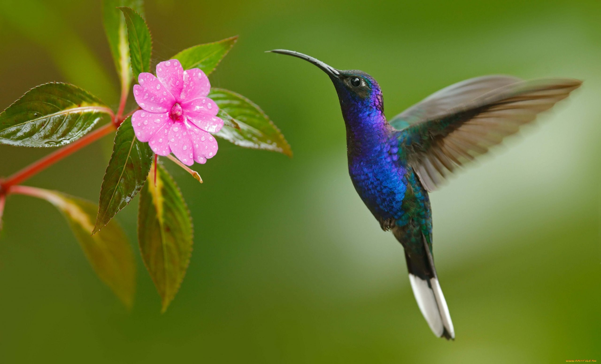

В прошлом сезоне «Адмирал» сенсационно влетел в плей-офф, выбил оттуда «Салават» и даже забрал два матча у «Ак Барса». Увы, этот сезон совсем не напоминает прошлогодний. Владивосток – последний на Востоке, а главный тренер Леонид Тамбиев, который еще весной был героем, вот-вот может быть уволен. Развал команды начался в межсезонье, когда летом «Адмирал» покинули лидеры: • Либор Шулак – лучший бомбардир и ассистент команды, единственный представитель Владивостока на Матче звезд-2022. Перешел в «Авангард», где за 18 матчей набрал лишь 5 очков; • Михал Криштоф – лучший бомбардир и ассистент среди нападающих «Адмирала», ушел в «Сочи» – 3+9 в 20 играх; • Николай Елисеев – был пятым снайпером в команде Тамбиева. Сейчас без команды – вмешалась политика (у Елисеева – гражданство Латвии); • Рудольф Червены – делил третье место в списке снайперов команды с Шулаком, в топ-5 по среднему айстайму – 19:07. Летом подписался с «Барысом» – 2+2 в 12 матчах.
 Коли́бри (лат. Trochilidae) — семейство маленьких птиц из отряда стрижеобразных (Apodiformes). Известно более 350 видов, обитающих в Америке от Аляски и Лабрадора до Огненной Земли, многие виды являются эндемиками. Широко распространены в тропических лесах, особенно на среднегорье. Большую часть рациона колибри составляет богатый углеводами сладкий нектар цветковых растений, который они добывают с помощью длинного чувствительного языка. В качестве белковой добавки выступают мелкие членистоногие, которых птицы ловят в воздухе или снимают с листьев и паутины. Благодаря питанию нектаром колибри являются опылителями; многие растения Нового Света опыляются исключительно ими.